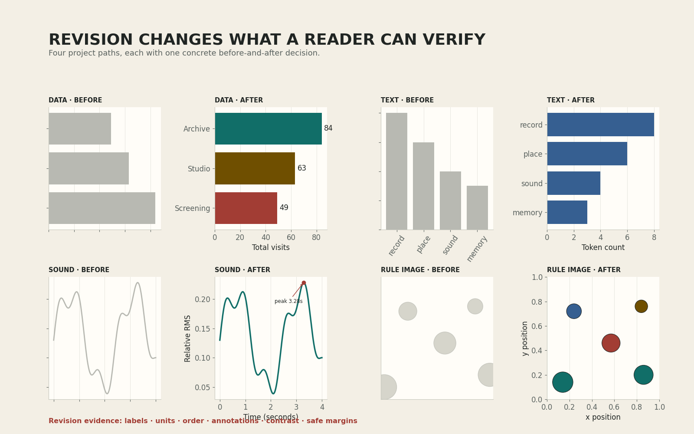

목표 달성형 개인 실습: 결과보다 수정 근거와 재실행 증거까지 완성하기
실습 개요
14주차 기준 결과를 보존한 뒤 1교시의 수정 계약 두 가지를 적용합니다. 수정 결과, 비교 기록, 자동 검사와 교수 확인을 하나의 제출 패키지로 완성합니다.
완료 목표
새 런타임에서 노트북을 처음부터 실행해 1600 × 1000 PNG와 독립 HTML을 만들고, 수정 전후 파일의 지문이 실제로 다른지 확인합니다.
평가 원칙
기능 수와 작업 속도가 아니라 정확성, 재현성, 설명 가능성, 책임 있는 자료 이용을 확인합니다. 선택 확장은 평가하지 않습니다.
70% 프로젝트 프로토타입을 증거와 함께 완성하기
자동 검사 PASS + 수정 전후 증거 + 결과 파일 열림 + 출처 확인 + 교수 증거 확인 + 필수 파일 제출 = 즉시 귀가
공정성 원칙: 작업 속도와 남은 수업 시간은 평가에 반영하지 않습니다. 16개 필수 조건을 충족하면 선택 확장을 하지 않아도 같은 완료로 기록합니다.
- 0-3분공통 판정 안내
- 3-7분사본과 프로젝트 카드
- 7-13분수정 전 기준점
- 13-19분수정 두 가지
- 19-24분결과와 기록
- 24-28분새 런타임 검사
- 28-43분완료 순서 확인
- 43-47분한 항목 보정
- 47-50분제출과 귀가
먼저 내려받기
노트북을 직접 열어 원본을 수정하지 않습니다
Google Colab에 업로드한 뒤 Drive에 사본을 저장합니다. 사본 이름을 먼저 week15_학번_이름_project.ipynb로 바꿉니다. 학번과 이름에는 공백, 슬래시, 특수문자를 넣지 않습니다.

원본 PNG 열기 ↗귀가 조건 16개
실습 진행률완료 0/16
체크 상태는 이 브라우저에만 저장됩니다. 체크는 진행을 기억하는 도구이며 자동 검사, 교수 확인, 실제 제출을 대신하지 않습니다.
SETUP사본과 기준점
REVISION두 가지 수정
EVIDENCE수정 전후 기록
FINISH검사, 확인, 제출
0-3분 · 공통 판정과 작업 원칙
- 모든 작업은 개인으로 진행합니다.
- 14주차 기준 파일을 덮어쓰지 않습니다.
- 필수 편집 구역 세 곳과 승인 코드 영역만 수정합니다.
- 자동 검사는 파일과 값의 조건을, 교수는 의미와 가독성을 확인합니다.
- 완료한 학생은 제출 확인 뒤 바로 귀가합니다.
오늘의 종료 문장
WEEK 15 PROJECT REFINEMENT COMPLETE가 마지막 셀에 나타나고 세 파일이 열리며 제출이 확인되어야 합니다. 중간의 AUTOMATIC EVIDENCE READY는 교수 확인 전 상태입니다.
실습 파일이 열리지 않을 때
파일을 브라우저로 미리 보지 말고 Colab 첫 화면의 업로드 기능을 사용합니다. 업로드 뒤에는 반드시 Drive에 사본 저장을 선택합니다.
자신의 프로젝트가 아직 작동하지 않을 때
project_mode = "provided"를 유지하고 같은 경로의 제공 예제로 전체 증거 구조를 먼저 완성합니다. 실습 목표는 외부 파일 복구가 아니라 수정과 검증의 완전한 경로입니다.
3-7분 · STEP 1에서 사본과 프로젝트 카드 준비하기
STEP 1의 편집 구역에서 실제 학번과 이름, 경로, 입력 모드를 입력합니다. 제공 경로는 project_mode = "provided"와 approval_status = "provided"를 함께 사용합니다. 승인받은 자신의 경로만 project_mode = "own", approval_status = "approved", own_source_filename, own_probe_filename을 기록합니다. 질문은 현재 입력이 답할 수 있는 범위로 쓰고, 출처에는 검색 서비스가 아니라 자료를 만든 사람이나 기관과 원본 위치를 기록합니다.
| 필드 | 작성 기준 | 구체적인 예 |
|---|---|---|
project_mode | 제공 경로 또는 승인된 자신의 경로 | provided / own |
approval_status | 입력 모드와 일치하는 판정 | provided / approved |
own_source_filename | own일 때 실제로 읽을 승인 파일 | week14_학번_이름_source.csv |
own_probe_filename | 원본과 같은 형식과 구조이며 의미 있는 한 항목만 다른 승인 검사 파일 | week14_학번_이름_probe.csv |
project_question | 한 결과 화면으로 답할 수 있는 질문 | 세 범주의 기록 합계는 어떻게 다른가? |
source_title | 자료 이름과 제공 주체 | 수업 제공 9행 가상 공간 기록 |
usage_rights | 분석, 변형, 제출 근거 | 수업 실습과 결과 제출 허용 |
reference_date | 자료의 기준 또는 확인 날짜 | 2026-08-18 확인 |
privacy_check | 개인 식별 정보 포함 여부 | 실명, 연락처, 위치 정보 없음 |
학번과 이름을 입력했는데 파일명 오류가 날 때
공백과 슬래시 같은 문자는 안전한 밑줄로 바뀝니다. 그래도 오류가 나면 학번과 이름이 기본값인 “학번”, “이름”으로 남아 있지 않은지 확인합니다.
이용 조건을 찾을 수 없을 때
추측해서 허용이라고 쓰지 않습니다. 수업 제공 입력으로 전환하거나 직접 만든 자료를 사용합니다. 권한이 확인되지 않은 입력은 오늘 제출 패키지에 포함하지 않습니다.
7-13분 · 수정 전 증거를 고정하기
STEP 2는 14주차 기준 이미지를 읽고 파일 지문을 계산합니다. 기준 이미지가 없다면 제공 기준 이미지를 사용합니다. 자신의 파일을 사용할 때에는 업로드한 파일 이름이 코드의 경로와 정확히 같아야 합니다.
- 14주차 기준 PNG 또는 독립 HTML을 노트북과 같은 실행 폴더에 업로드합니다.
baseline_mode를upload로 바꾸고 14주차 PNG 또는 독립 HTML 파일명을 지정합니다.- HTML이면 문서 안에 포함된 PNG를 자동으로 꺼냅니다. 셀을 실행해 1600 × 1000 크기와 SHA-256 지문을 확인합니다.
- 수정 전 이미지를 열어 수정 계약서의 문제 위치를 다시 찾습니다.
기준 이미지 크기 오류가 날 때
화면 캡처나 축소된 메신저 이미지를 올렸을 가능성이 큽니다. 14주차 노트북이 직접 저장한 1600 × 1000 PNG 또는 그 PNG가 포함된 독립 HTML을 사용합니다. 찾을 수 없으면 제공 기준으로 진행합니다.
기준 파일과 수정 파일의 이름이 같아도 되는가?
안 됩니다. 수정 저장이 기준 파일을 덮어쓰면 전후 지문과 시각 비교가 모두 무효가 됩니다. 파일명에 baseline과 refined를 분리합니다.
13-19분 · STEP 3에서 수정 행동 두 가지 실행하기
STEP 3에서 revision_focus_1과 revision_focus_2를 정확성, 가독성, 재현성, 책임성, 발표 가능성 가운데 서로 다르게 고릅니다. 각 초점에는 노트북이 실제로 실행할 수 있는 구조화된 수정 동작이 하나씩 연결됩니다. 행동 문장은 선택한 렌즈의 한국어 이름으로 시작하고 해당 동작 코드를 포함해야 합니다.
| 수정 초점 | 구조화된 수정 동작 | 자동으로 달라지는 화면 |
|---|---|---|
| 정확성 | show_count_check | 입력 수와 표시 수 검사 |
| 가독성 | clarify_title_unit | 질문 제목과 단위 |
| 재현성 | stamp_run_id | 실행 ID와 입력 지문 |
| 책임성 | show_source_context | 출처와 기준일 |
| 발표 가능성 | strengthen_contrast | 배경, 대비, 불필요한 테두리 |
apply_revision_contract()는 두 동작을 차례로 실행하고 각 단계의 픽셀 지문이 실제로 달라졌는지 검사합니다. 자동 검사는 자연어 문장의 의미를 판정하지 않습니다. “왜 이 동작이 내 프로젝트의 문제를 해결하는가”는 수정 전후 위치를 가리키며 교수 확인에서 설명합니다.
자신의 입력을 이어갈 때에는 원본과 같은 형식과 구조를 유지하면서 의미 있는 한 항목만 바꾼 검사용 입력을 함께 준비합니다. 예를 들어 규칙 기반 이미지가 CSV 좌표를 읽는다면 검사 파일도 CSV이며 좌표 하나만 다릅니다. 교수와 확인한 제작 함수는 두 파일을 모두 project_input.read_text() 또는 project_input.read_bytes()로 읽습니다. 노트북은 원본을 두 번 실행해 같은 픽셀 지문이 나오는지 먼저 확인하고, 검사 파일 실행은 다른 픽셀 지문을 만드는지 비교합니다. 입력을 무시하는 코드와 실행할 때마다 임의로 달라지는 코드는 모두 PASS하지 않습니다. 자동 검사 셀은 수정하지 않습니다.
데이터
결측 행 수를 출력하고 축 단위와 값 레이블을 추가합니다. 처리 배열과 막대 레이블을 항목별로 비교합니다.
텍스트
정규화 규칙과 제외 단어를 기록하고 빈도순으로 정렬합니다. 상위 단어가 원문에 실제로 있는지 확인합니다.
사운드
시간축을 초로 계산하고 높은 에너지 구간에 직접 표식을 붙입니다. 파일 길이와 축 끝점을 비교합니다.
규칙 기반 이미지
도형 경계를 검사하고 색과 윤곽선을 함께 사용합니다. 저장 이미지에서 모든 형태가 캔버스 안에 있는지 봅니다.
두 수정 행동이 같은 결과를 바꿀 때
서로 다른 완료 증거를 가질 수 있으면 가능합니다. 예를 들어 단위 추가는 의미를, 레이블 잘림 수정은 가독성을 다룹니다. 두 행동 모두 단순 색 변경이라면 하나를 정확성 또는 재현성 수정으로 바꿉니다.
수정 뒤 그래프가 빈 화면일 때
스타일을 바꾸기 전에 처리 배열의 길이와 값 범위를 출력합니다. 필터가 모든 값을 제거했는지, 축 범위가 데이터를 벗어났는지 하나씩 확인합니다.
10분 동안 같은 오류에서 벗어나지 못할 때
새 기능을 계속 붙이지 않습니다. 제공 경로로 전환하거나 수정 행동을 한 축 단위, 한 레이블, 한 경계 검사로 줄입니다. 완전한 증거 경로를 먼저 보존합니다.
19-24분 · STEP 4와 STEP 5에서 결과와 기록 만들기
STEP 4는 수정 PNG를 저장하고 두 파일의 지문, 이미지 크기, 파일 형식을 확인합니다. 지문이 같으면 실제 픽셀이 바뀌지 않은 것입니다. 코드만 고쳤거나 같은 그림을 다시 저장했는지 확인합니다.
STEP 5에는 관찰, 한계, 교수 피드백을 씁니다. 관찰은 결과 화면에서 가리킬 수 있어야 하고, 한계는 현재 자료만으로 말할 수 없는 범위를 정해야 합니다. 실행하면 수정 기록 HTML이 생성됩니다.
| 종류 | 좋은 문장 | 피할 문장 |
|---|---|---|
| 관찰 | Archive의 합계 42가 세 막대 중 가장 크다. | Archive는 가장 좋은 장소다. |
| 한계 | 9행 가상 기록만으로 실제 이용 선호를 일반화할 수 없다. | 데이터가 조금 부족하다. |
| 수정 효과 | 축 단위와 막대 값이 추가되어 수치를 직접 비교할 수 있다. | 전보다 훨씬 좋아졌다. |
파일 지문이 같다고 나올 때
수정 행동 변수를 바꾼 뒤 STEP 3과 STEP 4가 순서대로 실행되었는지 확인합니다. 같은 기준 이미지를 수정 결과 경로로 복사하지 않았는지도 봅니다.
수정 기록 HTML에서 이미지가 보이지 않을 때
노트북은 이미지를 HTML 안에 포함해 저장합니다. STEP 4의 두 PNG가 정상적으로 열린 뒤 STEP 5를 다시 실행하고 새 HTML을 내려받습니다.
24-28분 · 새 런타임에서 자동 검사 PASS 받기
- 작업을 저장하고 런타임 → 세션 다시 시작을 선택합니다.
- 노트북의 모두 실행으로 STEP 0부터 STEP 6까지 실행합니다.
- 중간 셀을 따로 누르지 않고 실행 순서
[0, 1, 2, 3, 4, 5, 6]을 유지합니다. - AUTOMATIC EVIDENCE READY · TEACHER CHECK REQUIRED 문구와 세 파일명을 확인합니다.
- 수정 PNG와 수정 기록 HTML을 노트북 밖에서 직접 엽니다.
자동 증거AUTOMATIC EVIDENCE READY · TEACHER CHECK REQUIRED
교수 확인 후WEEK 15 PROJECT REFINEMENT COMPLETE
필수 비교BASELINE DIGEST != REFINED DIGEST
실행 순서 오류가 날 때
FINAL CHECK만 반복 실행하지 않습니다. 세션을 다시 시작하고 STEP 0부터 모두 실행합니다. own 경로라면 원본과 같은 형식의 검사 파일도 새 세션에 다시 업로드해야 합니다.
파일은 있는데 크기 오류가 날 때
그래프의 figsize=(8, 5)와 저장의 dpi=200을 확인합니다. 둘을 곱한 결과가 1600 × 1000픽셀입니다. 화면 캡처로 교체하지 않습니다.
28-47분 · 완료 즉시 교수 증거 확인과 한 항목 보정
교수 확인 대기열은 19분부터 열립니다. 빠르게 자동 증거를 만든 학생은 28분을 기다리지 않고 바로 확인받습니다. 모든 학생은 28분까지 자동 증거 준비를 목표로 하며, 그때 30명이 동시에 대기하더라도 한 명당 완성 순서대로 최대 30초, 전체 30명도 최대 15분이므로 43분까지 첫 확인을 마칠 수 있습니다. 43-47분은 지적된 한 항목만 고치고 재확인하는 완충 구간입니다.
- 수정 전후 화면에서 구조화된 두 동작이 바꾼 위치
- 자체 입력과 시각 요소의 실제 대응, 출처, 기준일, 한계
- 독립적으로 열린 PNG와 HTML
확인을 받으면 STEP 5의 피드백을 기록하고 teacher_gate = "confirmed"로 바꿉니다. 이후 새 런타임 모두 실행을 한 번 더 진행해 WEEK 15 PROJECT REFINEMENT COMPLETE를 확인합니다.
teacher_gate가 pending이라고 나올 때
교수 확인 전에는 정상입니다. 자동 검사만 통과하려고 임의로 confirmed로 바꾸지 않습니다. 화면과 기록을 확인받고 피드백을 적은 뒤 변경합니다.
교수 확인에서 한 항목 수정이 나올 때
프로젝트 전체를 다시 만들지 않습니다. 지적된 레이블, 출처, 관찰 또는 파일 한 항목만 수정하고 자동 증거를 다시 만든 뒤 짧게 재확인합니다.
47-50분 · 필수 파일 제출하고 즉시 귀가하기
필수 1 · 실행 결과가 남은 노트북week15_학번_이름_project.ipynb
필수 2 · 수정 결과 이미지week15_학번_이름_refined.png
필수 3 · 수정 전후 기록week15_학번_이름_revision_log.html
조건부 4 · 자신의 입력노트북이 읽은 원본 파일 + 같은 형식의 검사 파일
- 세 필수 파일의 이름에 실제 학번과 이름이 있는지 봅니다.
- 노트북을 내려받아 마지막 실행 결과가 저장되어 있는지 확인합니다.
- PNG와 HTML을 내려받은 뒤 각각 직접 엽니다.
- 자신의 입력 모드라면 노트북이 읽은 원본 파일과 검사 파일도 함께 제출합니다.
- 수업에서 공지한 제출함의 업로드 완료 표시를 확인합니다.
즉시 귀가 계약
자동 검사 PASS + 수정 전후 증거 + 결과 파일 열림 + 출처 확인 + 교수 증거 확인 + 필수 파일 제출 = 즉시 귀가입니다. 추가 화면이나 장식을 만들 필요가 없습니다.
제출 뒤 파일 하나가 빠진 것을 발견했을 때
제출 완료로 확인받기 전에 세 파일을 각각 눌러 봅니다. 누락되었다면 같은 제출 항목에 다시 올리고 최종 목록을 확인합니다.
선택 확장 · 필수 결과를 보존한 뒤에만
제출과 귀가 확인까지 마친 학생만 진행합니다. 노트북과 결과 파일을 복사한 뒤 다음 가운데 하나를 선택합니다.
- 같은 처리 값을 다른 그래프로 표현하고 어떤 비교가 쉬워졌는지 기록합니다.
- 흑백 또는 저대비 환경에서도 정보를 구분할 수 있는 두 번째 표현을 만듭니다.
- 오류 하나에 초보자가 이해할 수 있는 안내 문장을 추가하고 실패 입력으로 확인합니다.
선택 확장은 추가 점수에 포함하지 않습니다. 필수 제출물을 덮어쓰지 않으며, 새로운 라이브러리 설치가 기존 결과의 재현성을 깨뜨리면 즉시 중단합니다.
16주차 연결
16주차에는 오늘의 70% 프로토타입과 수정 기록을 발표 가능한 최종 패키지로 정리합니다. 질문과 근거를 한 화면에서 설명하고, 실행 영상 또는 정적 결과, 출처와 한계를 함께 제시합니다. 오늘의 수정 전후 HTML은 최종 발표에서 과정의 증거로 사용할 수 있습니다.
실습 참고 자료
- Google Colab노트북 업로드, Drive 사본, 새 런타임 모두 실행에 사용합니다.
- Python 공식 문서: assert자동 검사 조건과 실패 메시지가 작동하는 원리를 확인합니다.
- Matplotlib 공식 문서: savefig지정한 크기와 해상도로 PNG를 저장하는 방법을 확인합니다.